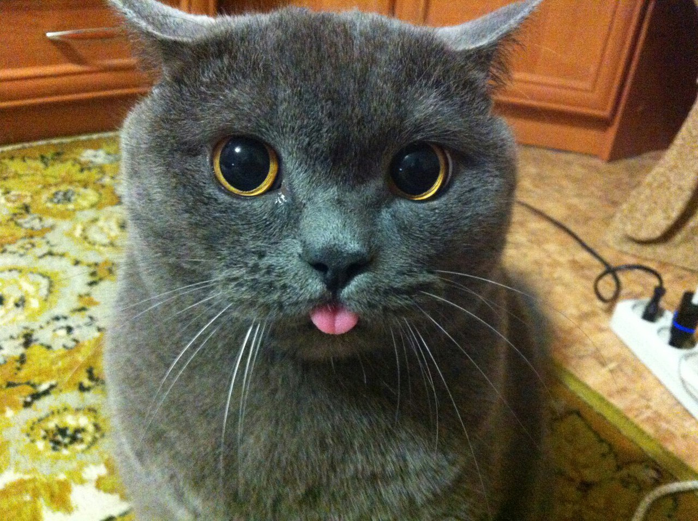

Стоимость: бесценноКратенькая история:
Кот Василий станет прекрасным спутником на долгие годы! с ним ничего не страшно, так как вооружен он
остренькими ноготочками. Главное, вовремя указать, кто в доме хозяин, ведь этот пушистый бандит медлить
не будет!
Стоимость: бесценноКратенькая история:
Тамарочка - очень послушная кошечка на самом деле. На фото не смотрите, это она любительница
повыпендриваться перед новыми людьми!
Стоимость: бесценноКратенькая история:
Пожалуйста, не стоит спрашивать, чему он так удивляется - Олежа может вас уверить, что причина удивиться
всегда найдется!
Стоимость: бесценноКратенькая история:
Марфута - непоседа еще та! Но это и ее плюс: однозначно выбор для одиноких людей, которые не могут найти,
чем заняться вечером - Марфочка у вас дома поводов создаст достаточно!
Стоимость: бесценноКратенькая история:
Эх, какже летит время... Только же недавно этот кот был в лентах всей страны, а ведь в действительности
уже давно... Как его зовут, никто не помнит, но чувство ностальгии он и без этого может вызвать
Стоимость: бесценноКратенькая история:
А это кто вообще?! М-да, кого только не встретишь... Ну ничего, его понять можно, кто ж котом (или кошкой)
быть не хочет, так еще и Мусей!
Стоимость: бесценноКратенькая история:
Без лишних слов, достаточно просто посмотреть на фото и после умиления, вызванного этим пушистым, пойти и
купить его в нашем интернет-магазине!
Стоимость: бесценноКратенькая история:
И ходят же всякие недобрые разговоры про черных котов... Вот и не везет же черному коту... Но какже
Иришка обрадуется новой семье и мисочке отборного коровьего!